컴퓨터활용능력-1급 (2007-07-01 기출문제)
1과목: 컴퓨터 일반
1. 다음 인터넷 서비스 중에서 파일을 주고받기 위한 전송 프로토콜로 옳은 것은?
- WWW
- FTP
- Telnet
(정답률: 72%)

2. 다음 정보통신 용어 중에서 연동장치에 대한 설명으로 옳지 않은 것은?
- 라우터는 네트워크 계층의 연동장치로 경로 설정에 이용된다.
- 리피터는 신호를 증폭하며 먼 거리로 정보를 전달 할 때 사용하는 연동장치이다.
- 브리지(Bridge)는 주로 LAN에서 다른 네트워크에 데이터를 보내거나 다른 네트워크로부터 데이터를 받아들이는데 사용되는 연동장치이다.
- 게이트웨이는 프로토콜 변환기능을 내포하며 OSI 참조 모델의 7계층까지를 포함하는 연동장치이다.
(정답률: 36%)
3. 다음 중 한글 Windows XP의 네트워크를 통한 공유에 관한 설명으로 옳지 않은 것은?
- 네트워크를 통해서 폴더도 공유할 수 있다.
- 폴더를 공유시키면 네트워크를 통해서 누구나 해당 폴더에 항상 읽고/쓰기가 가능하다.
- 탐색기에서 공유시키려는 폴더를 선택한 후에 마우스의 오른쪽 버튼을 눌러서 나오는 팝업 메뉴에서 공유 항목을 선택하여 공유를 설정할 수 있다.
- 네트워크를 통해서 프린터도 공유할 수 있다.
(정답률: 65%)
4. 다음 중 한글 Windows XP의 프린터 공유에 관한 설명으로 옳지 않은 것은?
- 기본 프린터로 설정된 프린터를 네트워크상의 다른 컴퓨터에서도 사용할 수 있다.
- [제어판]-[프린터 및 팩스]에서 공유할 프린터를 마우스 오른쪽 버튼으로 클릭한 다음 [공유]를 선택하여 옵션을 지정한다.
- PC에 직접 연결되지 않고 네트워크상에서 연결된 프린터를 기본 프린터로 설정할 수 있다.
- 같은 네트워크 내에서는 한 대의 프린터만 공유해야 한다.
(정답률: 77%)
5. 다음 중 파일의 성격유형 분류에 해당하는 확장자의 종류로 옳지 않은 것은?
- 실행파일 : COM, EXE, ZIP
- 그림파일 : BMP, JPG, GIF
- 사운드파일 : WAV, MP3, MID
- 동영상파일 : MPG, AVI, MOV
(정답률: 64%)
6. 운영체제는 사용자의 편리성과 시스템의 생산성을 높이기 위한 시스템 프로그램이다. 다음 중 운영체제의 목적과 거리가 먼 것은?
- 처리 능력 증대
- 신뢰도 향상
- 응답 시간 단축
- 파일 전송
(정답률: 77%)
7. 차량으로 이동하면서 타인의 무선 구내 정보 통신망에 무단으로 접속하는 행위를 무엇이라고 하는가?
- Hacking
- War Driving
- Cheating
- Stealing
(정답률: 71%)
8. 다음은 인터넷 서비스명과 설명을 짝 지어 놓은 것이다. 바르게 연결되지 않은 것은?
- 텔넷(Telnet) : 원격 컴퓨터에 접속하여 그 컴퓨터를 사용할 수 있게 하는 서비스
- 고퍼(Gopher) : 인터넷 상에서 채팅을 할 수 있게 하는 서비스
- WAIS(Wide Area Information Service) : 여러 곳에 흩어져 있는 방대한 데이터베이스로부터 정보를 검색할 수 있게 하는 서비스
- 핑커(Finger) : 특정 시스템을 사용하고 있는 사용자의 정보를 알아보기 위한 서비스
(정답률: 62%)
9. 다음 중 악성 코드에 대한 설명으로 옳지 않은 것은?
- 악의적인 용도로 사용 될 수 있는 유해 프로그램을 말한다.
- 외부 침입을 탐지하고 분석하는 프로그램으로 잘못된 정보를 제공할 수 있다.
- 때로는 실행하지 않은 파일이 저절로 삭제되거나 변형되는 모습으로 나타난다.
- 대표적인 악성 코드로 스파이웨어, 트로이 목마 등이 있다.
(정답률: 77%)
10. 다음 중 무선 접속을 통해 PDA나 휴대전화 같은 이동 단말기에 웹 페이지의 텍스트 부분이 표시될 수 있도록 해주는 언어는?
- WML
- VRML
- PHP
- Perl
(정답률: 53%)
11. 한글 Windows XP의 [제어판]-[내게 필요한 옵션]에서 설정할 수 있는 기능에 대한 설명으로 옳지 않은 것은?
- 키보드 탭에서 [필터키] 기능을 사용하면 너무 짧게 누르거나 반복되는 키 입력을 자동으로 무시할 수 있으며 반복 속도도 조정할 수 있다.
- 일반 탭에서 [직렬키] 장치를 사용하면 키보드와 마우스 이외의 다른 방법으로는 액세스할 수 없다.
- 디스플레이 탭에서 [고대비] 기능을 사용하여 읽기 쉽게 구성된 색상 및 글꼴을 사용할 수 있다.
- 소리 탭에서 소리 표시는 프로그램에서 나오는 음성 또는 소리를 화면에 자막으로 표시한다.
(정답률: 51%)
12. 다음 중 한글 Windows XP의 [제어판]-[사용자 계정]에 대한 설명으로 옳지 않은 것은?
- 사용자 계정 메뉴를 이용하여 계정 변경과 새 계정 만들기가 가능하다.
- 사용자 계정은 크게 관리자 계정과 사용자 계정으로 구분한다.
- 변경할 사용자 계정을 실행하여 사용자를 전환할 수 있다.
- 사용자 로그온 및 로그오프 옵션을 이용하여 새로운 시작화면 사용과 빠른 사용자 전환 사용 방법을 선택할 수 있다.
(정답률: 43%)
13. 인터넷 익스플로러의 [인터넷 옵션] 메뉴에서 [프로그램] 탭은 각 인터넷 서비스에서 자동으로 사용할 프로그램을 지정할 수 있다. 다음 중 [프로그램] 탭에서 자동으로 지정할 수 없는 프로그램은?
- HTML 편집기
- 일정
- 뉴스 그룹
- 홈페이지
(정답률: 30%)
14. 다음 중 자기디스크 장치에서 디스크가 회전하여 원하는 섹터가 헤드 밑에 올 때까지 걸리는 시간을 의미하는 것은?
- Seek Time(탐색시간)
- Latency Time(지연시간)
- Access Time(접근시간)
- Sector Time(구역시간)
(정답률: 31%)
15. 다음 중 한글 Windows XP의 파일 삭제에 대한 설명으로 옳지 않은 것은?
- 삭제할 파일을 선택한 다음 [Shift] 키와 [Delete] 키를 함께 누르면 휴지통에 저장되지 않고 영구히 삭제된다.
- 명령 프롬프트 창에서 삭제한 파일은 휴지통에 보관한다.
- [Shift] 키를 누른 상태에서 삭제할 파일을 마우스 왼쪽 버튼으로 드래그 하여 바탕 화면의 휴지통 아이콘에 올려놓으면 휴지통에 보관되지 않고 영구적으로 삭제된다.
- 하드디스크 드라이브마다 휴지통 크기를 다르게 설정할 수 있다.
(정답률: 60%)
16. 다음 중 이미지의 가장자리가 톱니 모양으로 표현되는 계단 현상을 없애기 위하여 경계선을 부드럽게 해주는 필터링 기술을 의미하는 것은?
- 랜더링(Rendering)
- 디더링(Dithering)
- 안티앨리어싱(Anti-Aliasing)
- 텍스쳐매핑(Texture-Mapping)
(정답률: 80%)
17. 다음 중 이동통신 업체들 간에 같은 플랫폼을 사용토록 함으로써 국가적 낭비를 줄이자는 목적으로 추진된 한국형 무선인터넷 플랫폼은?
- BREW
- WIPI
- GVM
- SKVM
(정답률: 69%)
18. 다음 중 아날로그 신호와 디지털 신호에 대한 설명으로 옳지 않은 것은?
- 범용컴퓨터는 아날로그 신호를 취급하기 때문에 정밀도가 제한적이다.
- 아날로그 신호는 시간에 따라 크기가 연속적으로 변하는 정보를 말한다.
- 디지털 신호는 시간에 따라 이산적으로 변하는 정보를 말한다.
- 디지털 신호는 복호화(Decoding) 과정을 통해 아날로그 신호로 변환된다.
(정답률: 57%)
19. 다음 중 업그레이드(UPGRADE)시 고려할 사항으로 거리가 먼 것은?
- 통신을 위한 네트워크 어댑터를 통신 속도가 빠른 것으로 업그레이드한다.
- CPU 성능을 나타내는 단위인 MIPS(Million Instruction Per Second)의 수치가 큰 것으로 업그레이드한다.
- CD-RW의 데이터 전송속도 단위인 KB/Sec 수치가 큰 것으로 업그레이드 한다.
- RAM 성능을 나타내는 속도 단위인 ns(Nano Second)의 수치가 큰 것으로 업그레이드한다.
(정답률: 50%)
20. 다음 중 멀티미디어의 특징에 관한 설명으로 옳지 않은 것은?
- 디지털화(Digitization) : 여러 종류의 정보를 컴퓨터로 처리하기 위해서 디지털 방식으로 변환하여 처리한다.
- 상호작용성(Interaction) : 정보 제공자의 선택에 의해 일방적으로 데이터가 전달되는 것이 아니라 정보 제공자와 사용자 간의 의견을 통한 상호 작용에 의해 데이터가 전달된다.
- 비선형성(Non-Linear) : 데이터가 일정한 방향으로 순차적으로 처리되는 것이 아니라 사용자의 선택에 따라 다양한 방향으로 처리된다.
- 용이성(Easiness) : 각각의 분리된 매체(오디오 등)보다 콘텐츠 제작이 용이하다.
(정답률: 54%)
2과목: 스프레드시트 일반
21. 다음 중 엑셀에서 셀 포인터를 이동시키는 방법으로 옳지 않은 것은?
- 셀에 데이터를 입력하고 [Ctrl]+방향 키(←)를 누르면 데이터 범위의 제일 왼쪽 셀로 셀 포인터를 이동시킨다.
- 셀에 데이터를 입력하고 [Ctrl]+[Home] 키를 누르면 [A1] 셀의 위치로 셀 포인터를 이동시킨다.
- 셀에 데이터를 입력하고 [Tab] 키를 누르면 입력되던 셀의 오른쪽으로 셀 포인터를 이동시킨다.
- 셀에 데이터를 입력하고 [Alt] 키를 누른 상태에서 [Enter] 키를 누르면 셀의 왼쪽으로 셀 포인터를 이동시킨다.
(정답률: 63%)
22. 다음 중 지도차트 작성시의 유의사항으로 옳지 않은 것은?(지도차트기능은 사라진 기능입니다. 참고만 하세요.)
- 엑셀에서 제공되는 지도의 종류는 한정되어 있기 때문에 사용자가 원하는 모든 종류의 지도를 작성할 수 없다.
- [Microsoft Map 옵션] 대화상자에 새 지도 작성시 기본값으로 사용할 옵션이 [수동]으로 설정되어 있을 경우, 지도에 사용된 데이터를 변경하면 그에 따라 지도도 최신 데이터로 수정된다.
- 데이터가 국가별, 지역별로 정렬되어 있어야 효과적인 지도를 작성할 수 있다.
- 입력 데이터를 피벗 테이블과 같은 기능을 이용하여 선행 분석하면 효과적인 지도를 작성할 수 있다.
(정답률: 46%)
23. 다음 중 시나리오에 대한 설명으로 옳지 않은 것은?
- 시나리오는 입력되어 있는 자료들에 대해 가상의 상황을 만들어서 그 결과를 분석하고 예측하는 기능이다.
- 시나리오 보고서의 종류는 ‘시나리오 요약’과 ‘시나리오 피벗 테이블’이 있다.
- 시나리오 보고서는 현재 작업하는 시트에 만들어 진다.
- 시나리오 병합을 통하여 다른 통합 문서나 다른 워크시트에 저장된 시나리오를 가져올 수 있다.
(정답률: 53%)
24. 다음 중 매크로의 구성 설명으로 옳지 않은 것은?
- 매크로는 통합문서에 첨부된 모듈 시트로 하나의 Sub 프로시저로 기록된다.
- 프로시저는 하나의 작업 단위로 이루어져 있다.
- 매크로는 Sub로 시작하여 End Sub로 종료된다.
- 매크로는 개체의 방법을 실행하는 것으로 기록된 내용은 변경할 수 없다.
(정답률: 66%)
25. 아래의 데이터에서 영업부의 연봉 합계를 계산하려고 한다. 다음 중 [E11] 셀에 들어갈 함수식으로 옳은 것은?
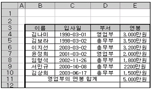
- =SUMIF(E4:E10, “영업부”, D4:D10)
- =SUMIF(D4:D10, “영업부”, E4:E10)
- =SUM(D4:D10, “영업부”, E4:E10)
- =SUM(E4:E10, “영업부”, D4:D10)
(정답률: 59%)
26. 다음 중 배열 수식에 관한 설명으로 옳지 않은 것은?
- 잘못된 인수나 피연산자를 사용했을 때 “#VALUE!” 에러가 발생한다.
- 빈 칸은 0으로 계산된다.
- 수식의 앞뒤에 중괄호({ })가 자동으로 입력된다.
- 배열 수식을 입력할 때에는 [Ctrl]+[Alt]+[Enter]를 누른다.
(정답률: 45%)
27. 아래의 시트에서 [E2] 셀과 같이 수식의 결과 값이 아닌 수식 자체를 표시하게 하는 바로 가기 키로 옳은 것은?
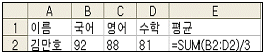
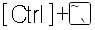
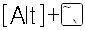
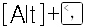
(정답률: 46%)
28. 아래의 시트에서 직책이 부장이고 기본급이 1,000,000 이상인 직원의 수를 계산하는 배열 수식으로 옳은 것은?
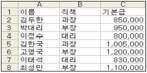
- {=COUNT((B2:B8=“부장”)*(C2:C8>=1000000))}
- ={COUNT((B2:B8=“부장”)*(C2:C8>=1000000))}
- ={COUNT(IF(($B$2:$B$8=“부장”)*($C$2:$C$8>=1000000),1,""))}
- {=COUNT(IF(($B$2:$B$8=“부장”)*($C$2:$C$8>=1000000),1,""))}
(정답률: 46%)
29. 다음 중 엑셀의 인쇄 기능에 대한 설명으로 옳지 않은 것은?
- 워크시트에서 숨긴 열이나 숨김 행은 인쇄 시에도 출력되지 않는다.
- 인쇄되는 모든 페이지마다 열 레이블을 나타내려면 [파일]-[페이지 설정]에서 [시트] 탭을 선택하여 [반복할 행]을 지정하면 된다.
- 임의의 위치에서 페이지를 나누려면 페이지 나누기를 삽입할 행 아래에 있는 행 머리글을 클릭한 후 [삽입]-[페이지 나누기]를 설정하면 된다.
- [페이지 설정] 대화상자의 [페이지] 탭에서 인쇄 배율을 지정하거나 자동 맞춤을 지정하여도 페이지 구분은 사용자가 지정한 페이지 구분대로 인쇄된다.
(정답률: 45%)
30. 다음 중 피벗 테이블 필드의 그룹 설정에 대한 설명으로 옳지 않은 것은?
- 그룹 만들기는 특정 필드를 일정한 단위로 묶어 표현할 때 사용하는 것으로 문자, 숫자, 날짜, 시간으로 된 필드에서 사용할 수 있다.
- 숫자 필드일 경우에는 ‘그룹 만들기’ 대화상자에서 시작, 끝, 단위를 지정해야 한다.
- 문자 필드일 경우에는 ‘그룹 만들기’ 대화상자에서 그룹 이름을 반드시 지정해 주어야 한다.
- 그룹을 해제하려면 그룹으로 설정된 영역의 바로 가기 메뉴에서 [그룹 및 윤곽 설정]-[그룹 해제]를 선택한다.
(정답률: 46%)
31. 다음 중 엑셀의 [인쇄 미리 보기] 기능에 대한 설명으로 옳지 않은 것은?
- 작성한 워크시트를 프린터로 인쇄하기 전에 인쇄했을 때의 모양을 화면으로 미리 확인할 수 있는 기능이다.
- 마우스를 드래그 앤 드롭하여 인쇄 여백 지정이 가능하다.
- [설정] 버튼을 눌러 [머리글/바닥글]을 입력할 수 있다.
- 각 셀의 행 높이, 열 너비를 자유롭게 조절할 수 있다.
(정답률: 41%)
32. 다음 중 한자의 특수문자 입력에 대한 설명으로 옳지 않은 것은?
- 한글 자음(ㄱ, ㄴ, ..., ㅎ) 중 하나를 입력한 후 [한자] 키를 누르면 화면 하단에 특수문자 목록이 표시된다.
- ‘국’과 같이 한글 한 글자를 입력한 후 [한자] 키를 누르면 화면 하단에 해당 한글에 대한 한자 목록이 표시된다.
- 한글 쌍자음 ‘ㄸ’을 입력한 후 [한자] 키를 누르면 화면 하단에 어떤 목록도 표시되지 않는다.
- 각각의 한글 자음에 따라서 화면 하단에 표시되는 특수 문자가 다르다.
(정답률: 67%)
33. 대출 원금 3천만원을 연 이자율 6.5%로 3년 동안 매월 말에 상환하는 경우 매월의 불입 금액을 계산하는 함수식으로 옳은 것은?
- =PMT(6.5%/12, 3*12, -30000000)
- =PMT(6.5%, 3*12, -30000000)
- =PMT(6.5%/12, 3*12, 30000000)
- =PMT(6.5%, 3*12, 30000000)
(정답률: 54%)
34. 다음 차트에 대한 설명으로 옳지 않은 것은?
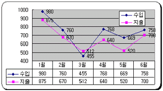
- 데이터 레이블의 “값 표시”가 적용되어 있다.
- 데이터 레이블과 범례 표식이 표시되어 있다.
- 차트 영역에 “그림자”와 “모서리가 둥글게”가 적용되어 있다.
- X(항목)축 교점은 0이다.
(정답률: 59%)
35. 다음 중 엑셀에서 [외부 데이터 가져오기]로 가져올 수 없는 형식의 파일은?
- 쿼리 파일(.dav)
- 텍스트 파일(.txt)
- 데이터베이스 파일(.mdb)
- 아래아 한글 파일(.hwp)
(정답률: 63%)
36. 다음 중 영문 대·소문자를 구분하도록 설정했을 때의 오름차순 정렬의 순서를 바르게 표시한 것은?(윈도우 XP 문제로여기서는 기존 정답인 1번을 누르면 정답 처리됩니다. 자세한 내용은 해설을 참고하세요.)
- 1 - ? - 나 - a - A
- 1 - ? - 나 - A - a
- ? - 1 - 가 - A - a
- ? - 1 - 가 - a - A
(정답률: 55%)
37. 아래의 주어진 표와 같이 3가지 조건에 따라 셀 서식을 각각 다르게 설정하기 위한 사용자 정의 셀 서식으로 옳은 것은?
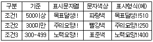
- [파랑][>=500]“목표달성!!”;[빨강][<300]“주의요망!!”;“노력요망!!”
- [파랑][>=500]“목표달성!!”;[빨강][<300]“주의요망!!”; G/표준“노력요망!!”
- [파랑][>=500]“목표달성!!”G/표준;[빨강][<300]“주의요망!!”G/표준;“노력요망!!”G표준
- [파랑][>=500]“목표달성!!”G/표준;[빨강][<300]“주의요망!!” G/표준;[G표준]“노력요망!!”
(정답률: 37%)
38. 다음 Macro1이라는 이름의 매크로 코드이다. 이 매크로를 수행한 후 수식 “=SUM(A2:A10)”의 결과 값으로 옳은 것은?
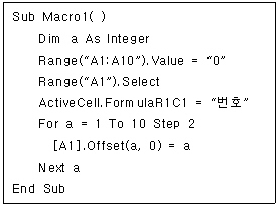
- 25
- 35
- 45
- 55
(정답률: 39%)
39. 다음 중 매크로에 대한 설명으로 옳지 않은 것은?
- 매크로 실행은 매크로 이름 상자에 실행할 매크로 이름을 선택하고, 실행 버튼을 클릭한다.
- 매크로 이름의 첫 글자는 반드시 문자여야 하며 나머지는 문자, 숫자, 밑줄문자(_), 공백 등이 포함될 수 있다.
- 매크로 바로 가기 문자로 @나 #과 같은 특수 문자나 숫자는 사용할 수 없다.
- 매크로 바로 가기 키가 엑셀 프로그램에서 제공하는 기본 바로 가기 키보다 우선한다.
(정답률: 47%)
40. 다음 중 엑셀 개체에 대한 설명으로 옳지 않은 것은?
- Workbooks(“BOOK1”).Activate : 열려있는 통합 문서 BOOK1.XLS를 활성화 한다.
- Workbooks.Open “LARGE.XLS” : 통합 문서 LARGE.XLS 파일을 연다.
- Workbooks(“Sheet1”).Activate : Sheet1을 활성화한다.
- Workbooks(1).Visible = False : 현재 통합 문서에서 워크시트1을 삭제한다.
(정답률: 67%)
3과목: 데이터베이스 일반
41. 다음 중 쿼리를 작성할 때 생년월일 필드에 대하여 생일이 1980년 이후인 사람을 찾는 경우의 조건으로 가장 적합한 것은?
- Between #1980-01-01# and #1980-12-31#
- <= #1980-01-01#
- Year([생년월일]) >= 1980
- Date([생년월일]) >= #1980-01-01#
(정답률: 44%)
42. 다음 중 모듈에 대한 설명으로 옳지 않은 것은?
- 모듈이란 한 단위로 저장된 VBA의 선언문과 프로시저의 모음이다.
- 기본적인 모듈의 종류로는 클래스 모듈과 기본 모듈이 있으며, 모듈의 각 프로시저는 Function 프로시저나 Sub 프로시저가 될 수 있다.
- 폼과 보고서 모듈은 특정 폼과 보고서에 관련된 기본 모듈이다.
- 이벤트 프로시저를 사용하여 폼과 보고서의 기능뿐 아니라, 명령 단추를 마우스로 누르는 등 사용자 행동에 대한 응답을 제어할 수 있다.
(정답률: 30%)
43. 다음 중 개체-관계(E-R) 모델에 대한 설명으로 옳지 않은 것은?
- 개념적 모델인 E-R 모델을 데이터베이스로 구현하기 위해서는 논리적 데이터 모델로 변환해야 한다.
- E-R 도형에서의 타원은 개체 타입을 나타낸다.
- E-R 모델에서 정의한 데이터를 관계형 데이터베이스에 저장하기 위해서는 E-R 모델에서의 각각의 개체를 각각의 테이블로 변환시켜야 한다.
- E-R 모델에서 하나의 속성은 관계형 데이터 모델에서 하나의 필드가 된다.
(정답률: 44%)
44. 다음은 보고서 작성 시 입력란(Text Box)의 속성에 대한 설명이다. 가장 관련이 있는 속성으로 옳은 것은?
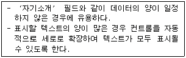
- 텍스트 맞춤
- 형식
- 테두리 스타일
- 확장가능
(정답률: 40%)
45. 어떤 회사의 데이터베이스에서 SQL문을 이용하여 [사원] 테이블에서 30세 이상 35세 이하인 사원의 ‘이름’과 ‘부서’를 검색하고자 한다. 다음 중 잘못 작성된 SQL 문은? (단, ‘나이’ 필드의 데이터 형식은 정수이다.)
- SELECT 사원.이름, 사원.부서 FROM 사원 WHERE 나이 in (30, 31, 32, 33, 34, 35);
- SELECT 이름, 부서 FROM 사원 WHERE 나이>=30 AND <=35;
- SELECT 이름, 부서 FROM 사원 WHERE 나이 Between 30 AND 35;
- SELECT 이름, 부서 FROM 사원 WHERE 사원.나이>=30 AND 사원.나이<=35;
(정답률: 31%)
46. 다음 중 인덱스(Index)에 대한 설명으로 옳지 않은 것은?
- 일반적으로 검색을 자주 할 필드에 대해 인덱스를 설정한다.
- 인덱스를 설정하면 레코드의 조회는 물론 레코드의 갱신 속도가 빨라진다.
- 인덱스는 여러 개의 필드에 설정할 수 있다.
- 인덱스 속성은 아니오, 예(중복 불가능), 예(중복 가능) 중 한개의 값을 갖는다.
(정답률: 54%)
47. 다음 보고서에서 ‘거래처명’과 같이 컨트롤의 데이터가 이전 레코드와 동일한 경우에는 이를 표시(혹은 인쇄)되지 않도록 설정하고자 한다. 다음 중 설정 방법으로 옳은 것은?
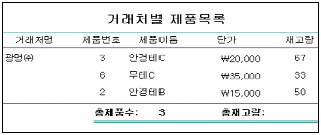
- 해당 컨트롤의 ‘확장 가능’ 속성을 ‘예’로 설정한다.
- 해당 컨트롤의 ‘중복 내용 숨기기’ 속성을 ‘예’로 설정한다.
- 해당 컨트롤의 ‘화면 표시’ 속성을 ‘아니오’로 설정한다.
- 해당 컨트롤의 ‘누적 총계’ 속성을 ‘전체’로 설정한다.
(정답률: 68%)
48. 다음 중 폼을 구성하는 컨트롤에 대한 설명 중 옳지 않은 것은?
- 콤보상자는 사용자가 값을 직접 입력하지 않고도 목록 중에서 값을 선택하여 입력하는 경우에 필요한 구성 요소이다.
- 목록상자를 이용하는 경우, 입력하려는 값이 목록에 없는 경우에 사용자가 값을 직접 입력할 수 있다.
- 속성 창의 컨트롤 원본 속성어는 SQL 문장이 사용될 수 있고, 쿼리 작성기로 질의를 작성하여 지정할 수도 있다.
- 확인란은 예/아니오 데이터 형식에서 사용될 수 있다.
(정답률: 41%)
49. 다음 질의 문에 대한 설명으로 옳은 것은?
- 회원 테이블에서 회원번호가 300인 회원의 레코드를 검색한다.
- 회원 테이블에서 회원번호가 300인 필드의 값을 검색한다.
- 회원 테이블에서 회원번호가 300인 회원의 레코드를 삭제한다.
- 회원 테이블에서 회원번호가 300인 필드의 값을 삭제한다.
(정답률: 57%)
50. 다음 중 테이블에서 인덱스로 설정할 수 있는 필드의 데이터 형식으로만 구성된 것은?
- 통화, 숫자, 하이퍼링크
- 메모, 하이퍼링크, 텍스트
- 숫자, 텍스트, OLE개체
- 예/아니오(논리형), 통화, 일련번호
(정답률: 42%)
51. 테이블의 필드에 데이터형식을 지정하려고 한다. 주민등록번호 필드의 데이터형식으로 가장 적합한 것은? 단, 주민등록번호는 ‘-’을 포함하여 저장하려고 한다. (주민등록번호 예 : 123456-1234567)
- 텍스트
- 메모
- 숫자
- 통화
(정답률: 54%)
52. 어느 DB의 [제품] 테이블에는 ‘제품번호’와 ‘제품명’ 필드가 있고, [주문] 테이블에는 ‘주문번호’, ‘제품번호’, ‘주문수량’ 필드가 존재한다. 이때, ‘제품명’별로 ‘총주문수량’을 검색하는 SQL 문장으로 옳은 것은?
- SELECT 제품.제품명, Sum(주문.주문수량) AS 총주문수량 FROM 제품 inner join 주문 on 주문.제품번호=제품.제품번호 GROUP BY 제품.제품명;
- SELECT 제품.제품명, Sum(주문.주문수량) AS 총주문수량 FROM 제품, 주문 GROUP BY 제품.제품명;
- SELECT 제품.제품명, Sum(주문.주문수량) AS 총주문수량 FROM 제품 inner join 주문 on 제품.주문번호=제품.제품번호 GROUP BY 제품.제품명;
- SELECT 제품.제품명, Sum(주문.주문수량) AS 총주문수량 FROM 제품, 주문 GROUP BY 제품.제품명 HAVING 주문.주문번호=제품.제품번호;
(정답률: 29%)
53. 보고서에 들어 있는 정보를 다음 [보기]와 같이 여러 개의 구역으로 나눌 수 있다. 다음 중 보고서의 구역에 관한 설명으로 옳지 않은 것은?
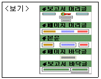
- 보고서 머리글 : 보고서의 첫 페이지에 한 번만 나타나며 로고, 보고서 제목, 인쇄 날짜와 같은 항목을 표시할 수 있다.
- 페이지 머리글 : 보고서의 모든 페이지의 윗 부분에 나타나며 열 머리글과 같은 항목을 표시하는 데 사용한다.
- 본문 : 보고서 데이터의 본문을 포함하여 실제 데이터가 반복적으로 표시되는 부분이다.
- 보고서 바닥글 : 보고서의 모든 페이지 아래 부분에 나타나며 주로 페이지 번호를 표시한다.
(정답률: 56%)
54. 비디오 대여점을 위한 데이터베이스를 구성하여 ‘고객’별로 ‘대여일’과 ‘반납일’을 관리하려고 한다. 고객들은 여러 비디오를 대여하며, 한 비디오는 여러 고객들에게 대여된다. 다음의 테이블 설계 중에서 옳은 것은? (단, 밑줄은 기본 키를 의미함)
- 고객(고객번호, 이름, 연락처) 비디오(비디오코드, 영화제목, 출시일) 대여(고객번호, 비디오코드, 대여일, 반납일, 대여금액)
- 대여(고객번호, 이름, 연락처, 대여비디오코드) 비디오(비디오코드, 영화제목, 출시일)
- 대여(고객번호, 이름, 연락처, 대여한비디오1, 대여한비디오2) 비디오(비디오코드, 영화제목, 출시일)
- 고객(고객번호, 이름, 연락처) 비디오(비디오코드, 영화제목, 출시일) 대여(고객번호, 비디오코드, 이름, 영화제목)
(정답률: 56%)
55. 폼에서 ‘성명’ 컨트롤에 데이터를 입력하기 위해 입력모드를 ‘한글’ 또는 ‘영문’ 입력상태로 지정할 때 사용하는 속성은?
- 엔터키 기능(EnterKey Behavior)
- 상태 표시줄(StatusBar Text)
- 탭 인덱스(Tab Index)
- 입력 시스템 모드(IME Mode)
(정답률: 70%)
56. 다음 중 아래와 같은 형식의 보고서에 대한 설명으로 옳지 않은 것은?
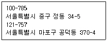
- 우편발송을 위해 편지봉투에 붙일 주소 레이블을 작성하는 보고서이다.
- 주소 레이블 마법사를 이용하여 작성할 수 있다.
- 조건에 따라 다르게 표현되도록 필요한 조건식을 입력할 수 있다.
- 출력할 글꼴 이름, 크기, 두께 등을 지정할 수 있다.
(정답률: 47%)
57. 폼에서 ‘회원등급’ 컨트롤의 속성이 다음과 같이 설정되었다. 이에 대한 설명으로 옳지 않은 것은?
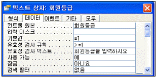
- 새 레코드를 작성할 때에 회원등급 필드에 자동으로 입력되는 값은 1이다.
- 필드 값으로 1보다 작은 값이 입력되면 ‘회원등급을 입력하시오.’라는 메시지가 나타난다.
- 폼 필터 창을 사용할 때에 회원등급 필드의 값은 표시되지 않는다.
- 회원등급 필드의 값이 화면상에 보이지만 수정할 수는 없다.
(정답률: 50%)
58. 다음 보기의 프로그램이 수행되었을 때 변수 Sum의 값은 얼마인가?
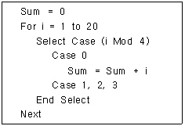
- 45
- 55
- 60
- 70
(정답률: 49%)
59. 다음 중 테이블이나 쿼리를 원본으로 하여 정보를 입력, 검색, 수정, 삭제 등의 작업을 편리하게 수행할 수 있도록 하고, 사용자와 데이터베이스간의 대화형 처리를 가능하게 해주는 개체로 옳은 것은?
- 보고서
- 폼
- 연결테이블
- 질의
(정답률: 51%)
60. 다음 중 두 테이블간의 관계를 다음과 같이 설정하였을 경우에 대한 설명으로 옳은 것은?
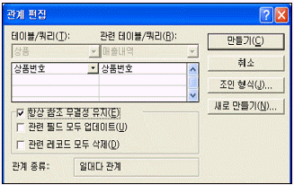
- <매출내역> 테이블의 상품번호 필드에는 <상품> 테이블에 존재하지 않는 상품번호를 입력할 수 있다.
- <상품> 테이블의 상품번호 필드 값이 바뀔 때마다 <매출내역> 테이블의 <상품번호> 필드 값이 자동으로 변경된다.
- <상품> 테이블의 특정 레코드가 삭제되면 <매출내역> 테이블에서 해당 상품번호를 갖고 있는 레코드가 자동적으로 삭제된다.
- <상품> 테이블에서는 <매출내역> 테이블에서 사용하고 있는 상품번호 필드의 값을 변경할 수 없다.
(정답률: 31%)